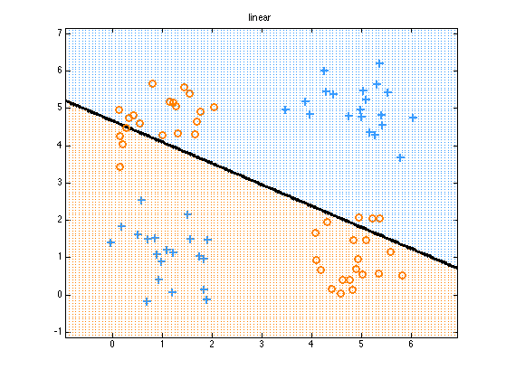
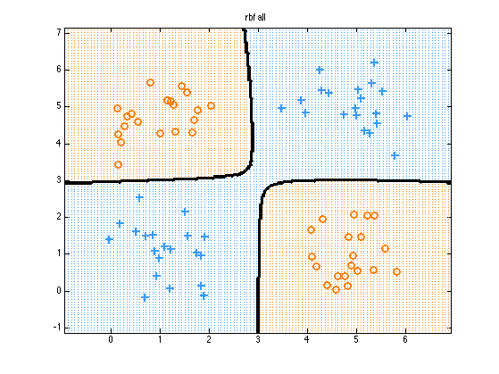
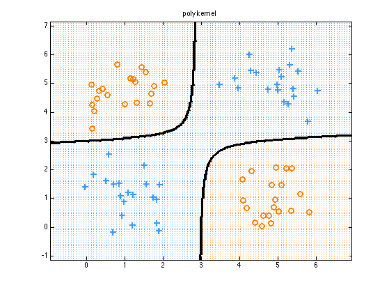
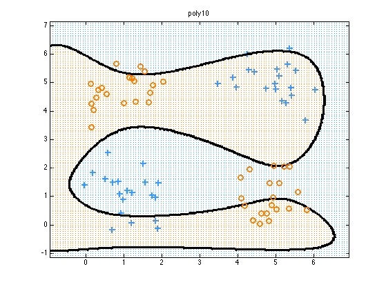
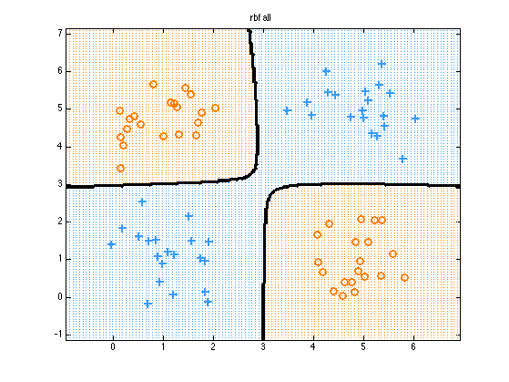
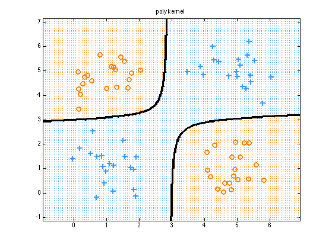
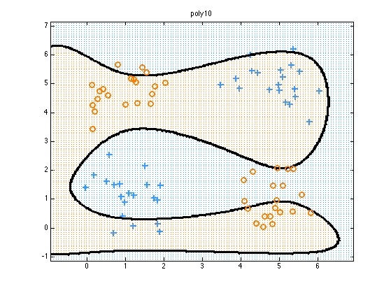

Apply L2 Logistic Regression to the XOR problem
We show how RBF, and polynomial expansions of the features 'solve' it, while using raw features does not.
Contents
% This file is from pmtk3.googlecode.com function logregXorDemo()
[X, y] = createXORdata(); lambda = 1e-2;
Linear Features
if 1 model = logregFit(X, y, 'lambda', lambda); yhat = logregPredict(model, X); errorRate = mean(yhat ~= y); fprintf('Error rate using raw features: %2.f%%\n', 100*errorRate); plotDecisionBoundary(X, y, @(X)logregPredict(model, X)); title('linear'); printPmtkFigure('logregXorLinear') end pp = {}; fnames = {}; titles = {};
Error rate using raw features: 49%
Kernel basis Expansions
if 1 rbfScale = 1; polydeg = 2; protoTypes = [1 1; 1 5; 5 1; 5 5]; %protoTypes = [1 1; 5 5]; protoTypesStnd = standardizeCols(protoTypes); kernels = {@(X1, X2)kernelRbfSigma(X1, protoTypesStnd, rbfScale) @(X1, X2)kernelRbfSigma(X1, X2, rbfScale) @(X1, X2)kernelPoly(X1, X2, polydeg)}; fnames = {'logregXorRbfProto', 'logregXorRbfAll', 'logregXorPolyKernel'}; titles = {'rbf prototypes', 'rbf all', 'poly kernel'}; for i=1:numel(kernels) pp{i} = preprocessorCreate('kernelFn', kernels{i}, 'standardizeX', true, 'addOnes', true); end end
Polynomial basis
deg = 10;
pp{end+1} = preprocessorCreate('poly', deg, 'rescaleX', true, 'addOnes', true);
fnames{end+1} = 'logregXorPoly';
titles{end+1} = sprintf('poly%d', deg);
Fit and predict
for i=1:numel(pp) model = logregFit(X, y, 'lambda', lambda, 'preproc', pp{i}); yhat = logregPredict(model, X); errorRate = mean(yhat ~= y); fprintf('Error rate using %s features: %2.f%%\n', titles{i}, 100*errorRate); predictFcn = @(Xtest)logregPredict(model, Xtest); plotDecisionBoundary(X, y, predictFcn); if i==1 hold on; plot(protoTypes(:, 1), protoTypes(:, 2), '*k', 'linewidth', 2, 'markersize', 10) end title(titles{i}); printPmtkFigure(fnames{i}) end
Error rate using rbf prototypes features: 0% Error rate using rbf all features: 0% Error rate using poly kernel features: 0% Error rate using poly10 features: 45%
   
   end